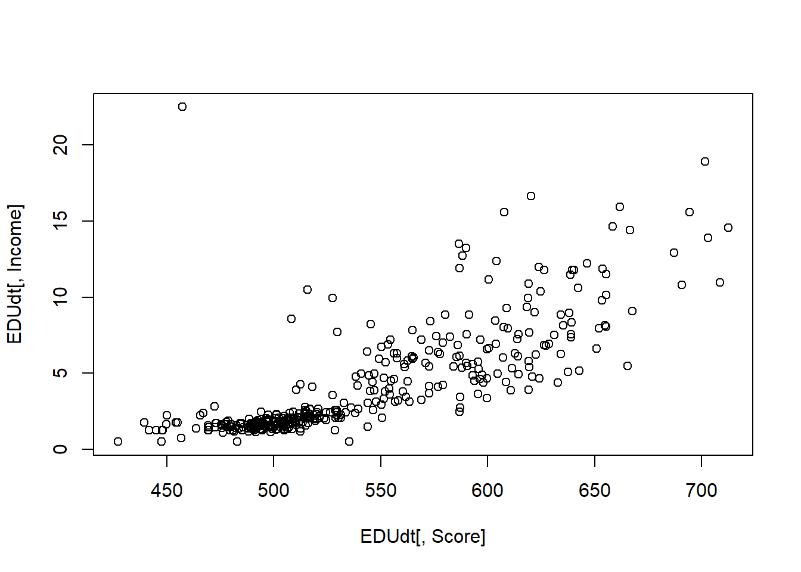
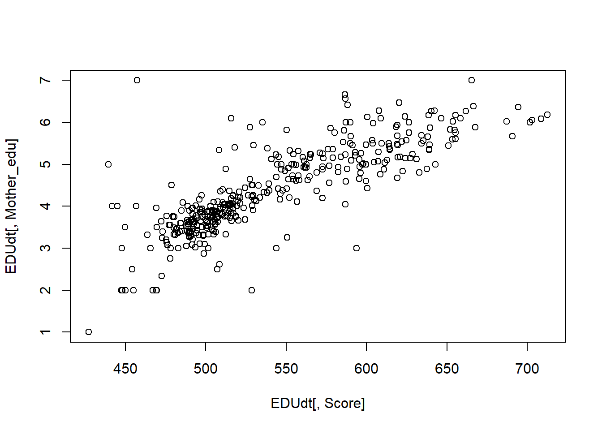

model1 <- lm(Score ~ Type_2, EDUdt)
anova(model1)## Analysis of Variance Table
##
## Response: Score
## Df Sum Sq Mean Sq F value Pr(>F)
## Type_2 2 809818 404909 313.78 < 2.2e-16 ***
## Residuals 380 490359 1290
## ---
## Signif. codes: 0 '***' 0.001 '**' 0.01 '*' 0.05 '.' 0.1 ' ' 1Based on the results above, with Pr(>F) at 2.2e-16, we can reject the null hyphotesis that the means are equal, and hence, it is possible to conclude that the means are significantly different.
In order to investigate possible correlations, it is useful to analyze both the correlation coefficient as well as the data plot, that will provide a visual understanding of the correlation.
EDUdt <- data.table(EDU)
cor(EDUdt[,Score],EDUdt[,Income])## [1] 0.7845133plot(EDUdt[,Score],EDUdt[,Income])
cor(EDUdt[,Score],EDUdt[,Mother_edu])## [1] 0.8230259plot(EDUdt[,Score],EDUdt[,Mother_edu])
cor(EDUdt[,Score],EDUdt[,Father_edu])## [1] 0.8389824plot(EDUdt[,Score],EDUdt[,Mother_edu])
cor(EDUdt[,Score],EDUdt[,Father_Prof])## [1] 0.8250296plot(EDUdt[,Score],EDUdt[,Mother_edu])
cor(EDUdt[,Score],EDUdt[,Mother_Prof])## [1] 0.8250341plot(EDUdt[,Score],EDUdt[,Mother_edu])It is interesting to notice that all the variables have a very high correlation with the score and might be considered in the regression model. Moreover, in a first view it seems that income shows an exponential relation to score, while the other factors look much more linear.
In addition to the previous, due to the nature of the variables, is also likely they are not independent from each other, and might have important associations. The acknowledge of such confounders will help the selection of the adequate set of variables for a first model.
cor(EDUdt[,Father_edu],EDUdt[,Mother_edu])## [1] 0.892412cor(EDUdt[,Father_Prof],EDUdt[,Mother_Prof])## [1] 0.8979875cor(EDUdt[,Income],EDUdt[,Mother_edu])## [1] 0.8407297cor(EDUdt[,Income],EDUdt[,Mother_edu])## [1] 0.8407297As expected, the variables assumed as independent present a significant association.
By dynamically selecting variables and running the regression model it was possible to notice that the R-square of the model was not significantly impacted by adding more variables - as expected due the association among them.
Moreover, the regression results (bellow) demonstrated that the Mother Education level, together with the Type of the school, can provide a R-square almost as good as that when all types of variables is used (Income, Education, Profession and School Type).
model2 <- lm(Score ~ Income + Mother_edu + Mother_Prof + Type_2, EDUdt)
summary(model2)##
## Call:
## lm(formula = Score ~ Income + Mother_edu + Mother_Prof + Type_2,
## data = EDUdt)
##
## Residuals:
## Min 1Q Median 3Q Max
## -224.600 -10.499 0.792 12.597 87.613
##
## Coefficients:
## Estimate Std. Error t value Pr(>|t|)
## (Intercept) 476.5974 19.1865 24.840 < 2e-16 ***
## Income 2.7830 0.8286 3.358 0.000864 ***
## Mother_edu 15.0172 3.5117 4.276 2.41e-05 ***
## Mother_Prof 19.5680 5.1526 3.798 0.000170 ***
## Type_2Private -60.0742 13.0033 -4.620 5.28e-06 ***
## Type_2State_City -89.2037 13.2162 -6.750 5.61e-11 ***
## ---
## Signif. codes: 0 '***' 0.001 '**' 0.01 '*' 0.05 '.' 0.1 ' ' 1
##
## Residual standard error: 28.43 on 377 degrees of freedom
## Multiple R-squared: 0.7656, Adjusted R-squared: 0.7625
## F-statistic: 246.3 on 5 and 377 DF, p-value: < 2.2e-16model3 <- lm(Score ~ Mother_edu + Type_2, EDUdt)
summary(model3)##
## Call:
## lm(formula = Score ~ Mother_edu + Type_2, data = EDUdt)
##
## Residuals:
## Min 1Q Median 3Q Max
## -189.65 -12.53 0.86 13.74 91.12
##
## Coefficients:
## Estimate Std. Error t value Pr(>|t|)
## (Intercept) 479.485 17.883 26.812 < 2e-16 ***
## Mother_edu 31.367 2.372 13.223 < 2e-16 ***
## Type_2Private -51.900 13.538 -3.833 0.000148 ***
## Type_2State_City -93.143 13.810 -6.745 5.75e-11 ***
## ---
## Signif. codes: 0 '***' 0.001 '**' 0.01 '*' 0.05 '.' 0.1 ' ' 1
##
## Residual standard error: 29.75 on 379 degrees of freedom
## Multiple R-squared: 0.7419, Adjusted R-squared: 0.7399
## F-statistic: 363.2 on 3 and 379 DF, p-value: < 2.2e-16